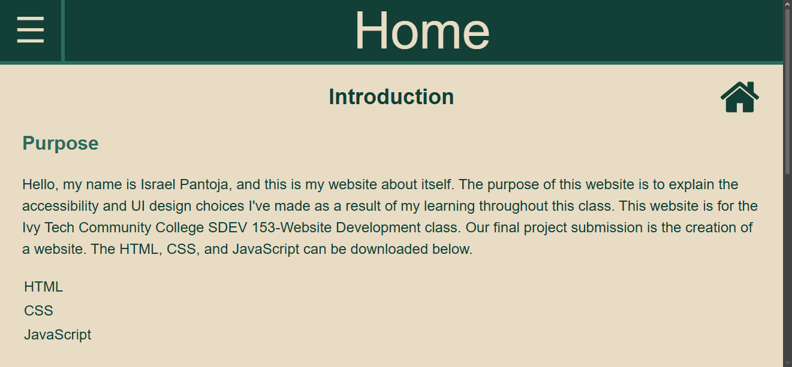
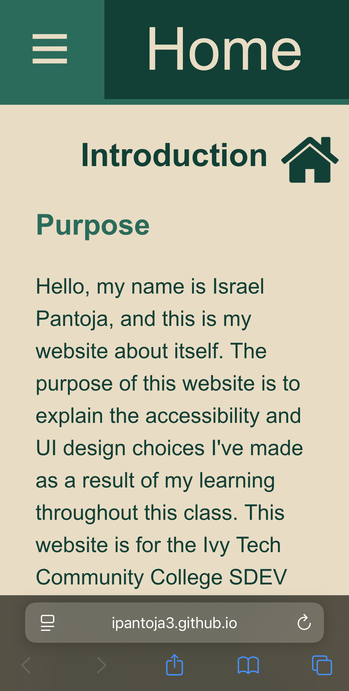

Mobile
Why Mobile First
Mobile-first design is building and optimizing a site with mobile users at the forefront, and making any edits for desktop second. This is primarily beneficial because usually, desktop sites won't translate well to mobile, but mobile sites can translate fairly easily to desktop. Designing around the constraints of mobile ensures a smooth integration to both platforms and removes the need to entirely redesign the website for mobile users later on in development. It forces the use of relative sizing units, which is generally good practice regardless.
Measurements
Planning ahead for mobile results in the sizing of elements requiring a lot of thought. A large image being 700px wide may be fine on a desktop, but on many phones, it will take up the entire screen. Using pixel measurements for UI is especially not recommended, as your website will look wildly different on an even slightly different display. So, sizing everything with relative units is best practice. Relative units, or in this case, dvw and dvh, will automatically adapt to the users' screen size. A wide image can now be 70dvw (70% of the dynamic view width) and always take up exactly 70% of the screen's width no matter what device the user has. Dvw is dynamic view width, with vw, regular view width, also being an option. I opted not to use vw as dynamic view width not only adapts the size of elements when the page loads, but dyanmically changes them if the size of the browser window changes with the website still open. Many mobile browsers have collapsing elements, and dvw/dvh adapt to these flawlessly.
On Your Phone
The website essentially looks and feels the same on mobile, as was my intention. Below is a picture of the website in desktop view, and a picture of the website in mobile view, for comparison.

